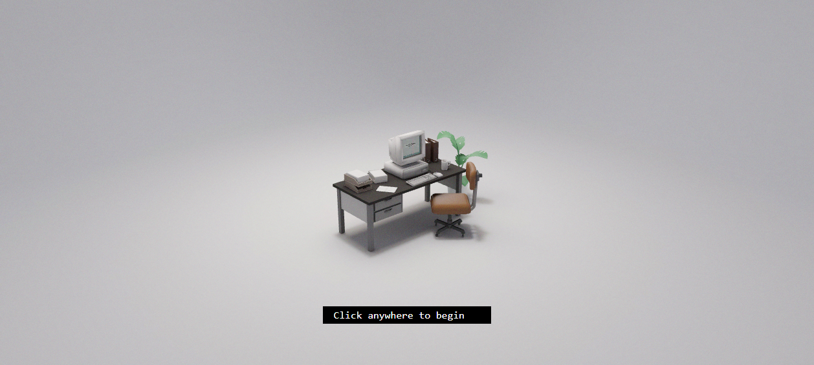
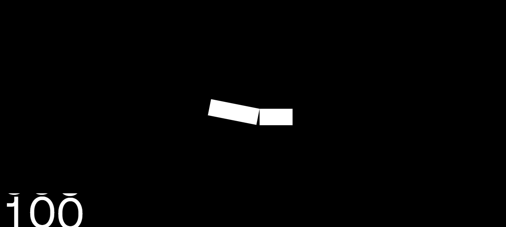

Mini-Games &
Playful Play
When a portfolio stops being a page you read and becomes a thing you play. The mechanics behind drivable 3D worlds, Konami eggs, squishy toy buttons — and the hard discipline of knowing when to switch the toys off.
01 · One mechanic beats ten effects
Every site in this teardown set that people remember by name made one bet: a single signature interaction, executed to obsession, outperforms a confetti of small animations. Bruno Simon ↗ turns a CV into a car you drive. Henry Heffernan ↗ boots a 90s OS inside a CRT. Lusion ↗ hands you a cluster of 3D plumbing joints to shove around with your cursor. None of them are "a page with effects" — they are one toy, fully committed.
The lesson recurs verbatim in our notes. Bruno Simon's teardown spells it out: "one signature mechanic beats ten generic scroll animations." Henry Heffernan's: "a single, well-choreographed camera/scroll move at first interaction does more for wow than dozens of small effects." Playful UI is not additive — it is focal. Pick the one thing, make it physical, make it the whole identity.
The playful-UI altitude rule. Decide your tier before you build: (A) the site is the game (Bruno, Henry) — diegetic IA, WebGL, weeks of work; (B) the site is a serious page with one signature toy (Lusion's hero, Josh Comeau's generative art); (C) the site is calm and ships micro-delight (a Konami egg, a squishy button, a UI sound). Most portfolios should aim for B or C. Tier A is a career-defining flex, not a Tuesday.
02 · The drivable résumé
The reference implementation is Bruno Simon ↗ — the single most-copied 3D web portfolio in the industry. There is essentially no DOM layout: the entire experience is one full-viewport <canvas>, the accessibility tree returns just two buttons, and everything visual is rendered in WebGL. You don't scroll sections — you drive a physics car (now on Rapier, up from the 2019 Cannon.js) through 13 explorable districts: a landing area, a projects zone, a lab, race tracks, a bowling alley, an altar.

What makes this a portfolio and not just a tech demo is the discipline layered on top. The 2025 rebuild ships an achievement system — 38 achievements with a session timer and reward tiers that unlock at 8 / 15 / 23 / 30 / 38 — turning a résumé into a completionist loop that massively extends dwell time. And crucially, it ships anti-soft-lock safety rails: Unstuck / Respawn / Reset buttons guarantee you can never get trapped when navigation is freeform. The whole build is even MIT-licensed and open-sourced (repo + Blender files), converting a portfolio into ongoing credibility and inbound links.
The other archetype is the diorama metaphor: Henry Heffernan ↗ recreates a 90s desk where the whole portfolio lives inside a working retro OS rendered onto the CRT mesh. The signature move everyone copies is the scripted camera transition: click-to-begin dollies the camera from an establishing isometric shot into a docked CRT framing.

The shell/content split. Henry renders a real HTML/React UI onto the 3D screen mesh — the "monitor" runs an actual interactive OS app served from a separate origin (os.henryheffernan.com), embedded and textured onto the mesh. Build your immersive 3D shell and your real content as two independent apps. The wrapper can be rebuilt without touching the content, and the content stays testable on its own.
03 · Diegetic nav & the toybox
"Diegetic" means the navigation exists inside the fiction — you don't click a nav link labelled "Projects," you drive up to a project or open a window on a desktop. Bruno Simon ↗'s IA is spatial: sections are physical districts. Henry Heffernan ↗'s is window-based: About / Experience / Projects / Contact are OS "apps," not links. Active Theory ↗ doesn't even load a new page when you pick Work — it transitions the WebGL scene to an animated category list (-> games, -> multiplayer, -> XR / VR / AI), so wayfinding is diegetic rather than route-based.
The non-negotiable discipline underneath: keep a real semantic DOM skeleton. Henry exposes hidden <a> links and headings (ABOUT / EXPERIENCE / PROJECTS / CONTACT) in the accessibility tree so the experience still works for screen readers, SEO, and no-JS. Copy that discipline religiously — diegetic navigation is a layer over a working document, never a replacement for one.
<!-- The fiction lives in canvas; the truth lives in the DOM. -->
<canvas id="scene" aria-hidden="true"></canvas>
<!-- Visually hidden, but real: screen readers, crawlers, no-JS all win -->
<nav class="sr-only" aria-label="Site sections">
<a href="/about">About</a>
<a href="/projects">Projects</a>
<a href="/contact">Contact</a>
</nav>/* The canonical visually-hidden utility — never display:none a nav link */
.sr-only {
position: absolute;
width: 1px; height: 1px;
padding: 0; margin: -1px;
overflow: hidden;
clip: rect(0 0 0 0);
clip-path: inset(50%);
white-space: nowrap;
border: 0;
}Anti-pattern: navigation with no escape hatch. Freeform spatial navigation has a failure mode — the soft-lock. Bruno Simon answers it with Unstuck / Respawn / Reset, his teardown's exact phrasing: "always ship escape hatches for any unconventional UX (a reset / skip / 'take me home' control) so novelty never traps the user." If your toy can strand a user, it is broken, no matter how beautiful.
04 · Easter eggs & the Konami code
An easter egg is the cheapest high-memorability interaction on the web: a hidden reward for the curious that costs a few lines and buys word-of-mouth. Bruno Simon ↗ packs the canonical set — a cookie-clicker mini-game (1 → 1000 cookies), a hidden debug-UI achievement, a sacrifice altar with a cataclysm, and the Konami code ("Up up down down… you know the rest"). Gianmarco Cavallo ↗ ships an explicit easter egg btn in the DOM. Cassidy Williams ↗'s teardown distills the principle: "one tiny interaction makes the site feel human."
The Konami code is the genre's mascot. Here is a correct, copy-pasteable listener — case-insensitive, resettable, and forgiving of a mistyped key:
// konami.js — fires once the full sequence is entered in order
const KONAMI = [
'ArrowUp','ArrowUp','ArrowDown','ArrowDown',
'ArrowLeft','ArrowRight','ArrowLeft','ArrowRight','b','a'
];
let progress = 0;
window.addEventListener('keydown', (e) => {
// Normalise: arrows keep their names, letters compare lowercase
const key = e.key.length === 1 ? e.key.toLowerCase() : e.key;
// advance on match; on a miss, fall back to 1 if it restarts the chain, else 0
progress = key === KONAMI[progress]
? progress + 1
: (key === KONAMI[0] ? 1 : 0);
if (progress === KONAMI.length) {
progress = 0;
document.documentElement.classList.add('konami-active'); // your reward
}
});Tap the keys in order (or use your arrow keys + B + A):
Eggs as living signals. Josh Comeau ↗ hangs his claymation avatar upside-down off a wave in the footer and drops seasonal copy ("Happy Pride month!"). Rauno Freiberg ↗ keeps his old portfolios alive at 2023.rauno.me as discoverable archives. An egg is a heartbeat — it proves a human still tends the site.
05 · Replayability
A toy you play once is a gimmick; a toy you come back to is an engine. Three mechanics drive replay in our teardowns:
Achievements & completion loops
Bruno Simon ↗'s 38 achievements + session timer + tiered rewards turn passive viewing into an active hunt — flips, barrel rolls, a bowling strike, driving 100km. The teardown's takeaway for mortals: "add a lightweight completion hook — a visited-all-sections badge, a hidden egg, a Konami code — to reward exploration and create word-of-mouth." You don't need 38; you need one visible counter.
Sound as an opt-in delight layer
UI audio is rare on the web, which is exactly why it lands. Josh Comeau ↗ ships a global "Disable sounds" toggle — the mere presence of it signals interactions emit audio feedback. Gianmarco Cavallo ↗ has a "Toggle sound" button; Active Theory ↗ puts a "Toggle Audio" control plus a full music player (prev/next song) top-left; Rauno Freiberg ↗'s archived 2023 site is remembered for its interface sounds on a dock metaphor. The rule is universal: sound is opt-in, never autoplay, and always toggleable.
// Lazy, gesture-gated UI sound — respects autoplay policy + user choice
let ctx; // AudioContext created on first gesture
const enabled = () => localStorage.getItem('sfx') !== 'off';
function blip(freq = 660) {
if (!enabled()) return;
ctx ??= new AudioContext(); // browsers require a user gesture first
const osc = ctx.createOscillator();
const gain = ctx.createGain();
osc.frequency.value = freq;
gain.gain.setValueAtTime(0.06, ctx.currentTime);
gain.gain.exponentialRampToValueAtTime(0.0001, ctx.currentTime + 0.12);
osc.connect(gain).connect(ctx.destination);
osc.start(); osc.stop(ctx.currentTime + 0.12);
}Re-rolls & generative state
Josh Comeau ↗'s hero is a procedural dashed-stroke rainbow with an "Edit the generative art" button — the visitor re-rolls it, so the page is never the same twice. Lusion ↗'s physics hero (a cluster of connector primitives reacting to your cursor with momentum) is replayable because it is responsive, not scripted — every visit produces a different shove.

06 · Playful without WebGL
You don't need Three.js to be playful. The cheapest, highest-ROI delight is physical-feeling motion on ordinary elements. Josh Comeau ↗'s entire brand is "delight engineering" — spring-based motion, squash-and-stretch, physical easing rather than linear transitions, applied to plain hover states. Cassidy Williams ↗ gets personality from individually rainbow-colored inline links — zero JS, pure CSS, instantly memorable. Gianmarco Cavallo ↗ ships a live world-clock that computes the visitor's offset ("7h behind you") — a tiny real-time toy on a static Astro site.
Here is the difference a spring easing makes versus a linear one — the single most impactful "toy" upgrade you can ship:
cubic-bezier(.34, 1.56, .64, 1) (overshoot) and a faux-3D shadow that compresses on :active — it feels like a physical key. The flat one is correct but lifeless. Same markup; the easing curve is the entire personality./* The squishy toy button — physicality from one bezier + a moving shadow */
.toy-btn {
border-radius: 999px;
box-shadow: 0 6px 0 #b9791a; /* the "depth" the key presses into */
transition: transform .12s cubic-bezier(.34, 1.56, .64, 1),
box-shadow .12s ease;
}
.toy-btn:active {
transform: translateY(4px); /* push the key down */
box-shadow: 0 2px 0 #b9791a; /* shrink the depth as it bottoms out */
}Sprinkle, don't drown. Gianmarco Cavallo ↗'s teardown nails the micro-toy budget: "sprinkle micro-delight (UI sounds, an easter egg, real-time clock) — cheap to build, high memorability payoff." One live clock, one swappable visual style, one sound toggle, one egg. Four small toys on a calm dashboard read as meticulous; forty read as a circus.
07 · Performance & accessibility
Playful UI is where performance and accessibility go to die if you're careless. The teardowns show the fixes.
Mask the load — don't spin
Heavy WebGL means shader compile + asset download. Lusion ↗ gates the experience behind a numeric preloader ("100" counter on black) that doubles as a progress mask — it buys time without feeling like a dead spinner. Henry Heffernan ↗ uses an intentional boot gate ("Click start to begin"): a themed intro that hides the load and provides the user gesture autoplay/WebGL contexts require. The teardown framing: "converts a forced load wait into on-brand theater and a required user gesture."
Scale to the GPU
Bruno Simon ↗ ships a "WebGPU / High effects" toggle with graceful fallback so the same world runs on phones and high-end desktops. Assets are GLTF + Draco-compressed (the original kept all models under ~2MB combined). Progressive enhancement on the GPU is non-optional for a public toy.
Honour prefers-reduced-motion — including JS
CSS reduced-motion is table stakes. But playful UI is often JS/canvas-driven, which the media query does not stop. Gate your rAF loops and physics in script too:
const reduce = window.matchMedia('(prefers-reduced-motion: reduce)');
function tick() {
if (reduce.matches) {
renderStaticFrame(); // one settled frame, no animation loop
return; // do NOT requestAnimationFrame
}
stepPhysics();
render();
requestAnimationFrame(tick);
}
// React live to the user toggling the OS setting mid-session
reduce.addEventListener('change', () => { /* pause / resume */ });Anti-pattern: canvas with an empty accessibility tree. Bruno Simon's a11y snapshot returns "just two buttons" — defensible for an art piece, fatal for a product. The fix is Henry's: every diegetic element gets a real DOM counterpart (aria-label, focusable controls, the visually-hidden nav from §3). If a keyboard or screen-reader user cannot reach your content at all, the toy has locked them out — the exact failure the Unstuck button exists to prevent, generalised.
08 · Knowing when NOT to
The most senior signal in this whole topic is restraint. The same teardown set that celebrates Bruno also celebrates the sites that turned the toys off — and they did it on purpose.
Rauno Freiberg ↗ is the clearest case: a Vercel design engineer who shipped two flashier versions (a 2023 OS/dock metaphor with interface sounds, a 2022 build) and then downshifted to a near-monochrome filmstrip of white cards. His teardown: "a confident downshift: the work speaks, the chrome disappears." The old toys aren't deleted — they're preserved as live easter-egg archives at 2023.rauno.me, "versioning your portfolio as a museum." That's the move: graduate from the toy, keep it as a footnote.
Hello Monday ↗ — a studio that builds WebGL for Google and Netflix and absolutely could show off — chose a "deliberately quiet and confident" near-empty white stage. The teardown's insight: "the few motion moments land harder" precisely because the page is otherwise calm. Cassidy Williams ↗ hand-codes a deliberately simple README-like hub and is explicit that the restraint is the point.
| Reach for a toy when… | Hold back when… |
|---|---|
| Your audience is devs/designers who reward craft (Bruno, Josh, Lusion) | Your audience needs to transact or find info fast (e-commerce, docs, dashboards) |
| The toy is the proof of skill you're selling | The toy competes with the content you're actually selling (Hello Monday's restraint) |
| You can ship escape hatches + a11y fallbacks + reduced-motion paths | You can't budget the perf/a11y work — half-built playful UI is worse than none |
| One signature mechanic, fully committed | You're stacking ten small effects hoping volume = wow |
The graduation pattern. Rauno's archive-as-museum is the healthiest long-term play for a personal site: be maximalist while you're proving yourself, then downshift to calm confidence — and keep the old versions reachable as eggs. Your portfolio's history becomes the easter egg.
09 · Steal-this checklist
- Pick ONE mechanic. A single signature interaction (Bruno's car, Henry's CRT) beats ten scroll effects. Commit fully or don't bother.
- Diegetic IA over a real DOM. Frame sections as places/windows/objects — but keep visually-hidden semantic links underneath for a11y + SEO (Henry's discipline).
- Always ship an escape hatch. Unstuck / Respawn / "take me home." Freeform UX must never soft-lock the user (Bruno's rule, generalised).
- One completion hook. A visited-all badge, a Konami code, a hidden egg — reward exploration, manufacture word-of-mouth.
- Sound is opt-in, toggleable, gesture-gated. Never autoplay (Josh, Gianmarco, Active Theory all toggle).
- Mask the load as theater. A numeric preloader (Lusion) or boot gate (Henry) beats a spinner and supplies the autoplay gesture.
- Spring easing > linear. The cheapest physicality upgrade —
cubic-bezier(.34,1.56,.64,1)on plain buttons (Josh's "delight engineering"). - Gate JS/canvas animation on
prefers-reduced-motion. The CSS query does not stop your rAF loop — checkmatchMediain script. - Know when to stop. Downshift to calm confidence when you've outgrown the flex; archive the old toys as live eggs (Rauno's museum).